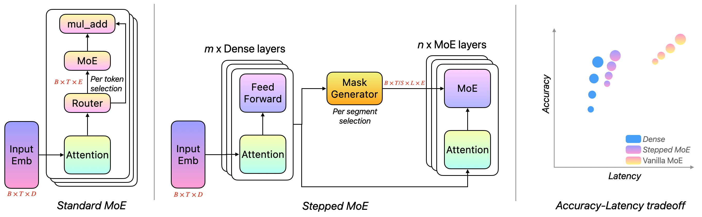
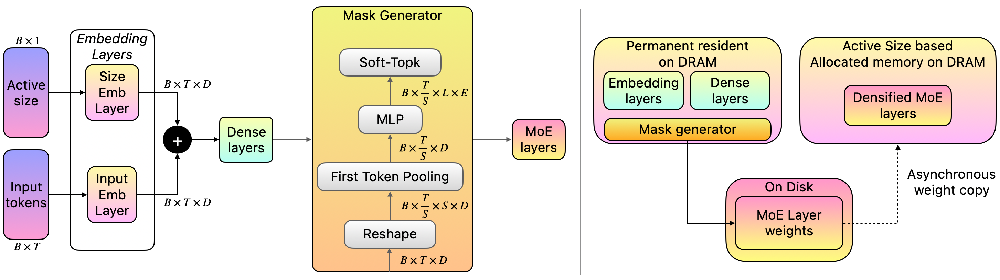
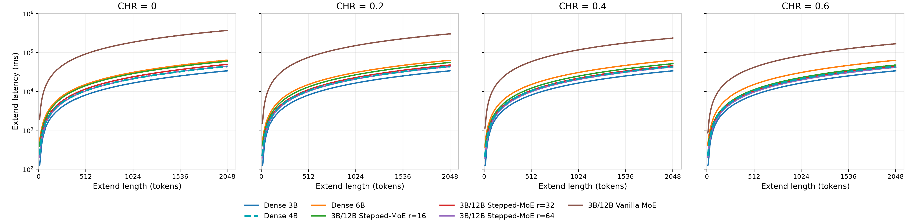
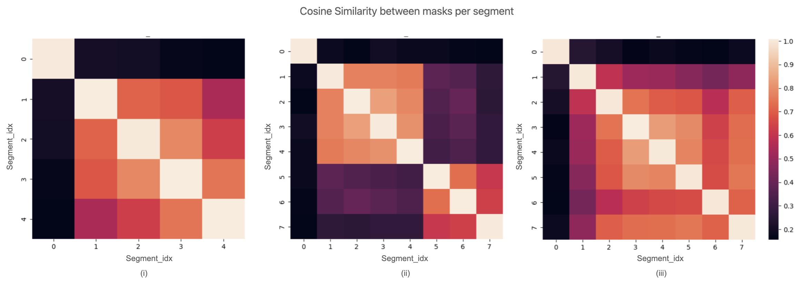

Stepped MoE：让专家驻留一段，让路由提前发生
PAPER READINGS · MODEL ARCHITECTURE · EDGE INFERENCE
一句话：Stepped MoE 用前段 Dense 网络一次选出后续所有层的专家，让这批权重连续服务 S 个 token，再刷新路由；同一个 checkpoint 还支持多档活跃参数预算。
Paper Metadata
| 字段 | 已核实信息 |
|---|---|
| 原标题 | Stepped MoE: Segment-Level Routing with Configurable Inference Complexity |
| 作者 | Arnav Kundu、Zhaoyang Xu、Bairu Hou、Chang Gao、Reed Li、Tao Lei |
| 机构 | Apple |
| 版本与日期 | arXiv:2610.07348v1 · 2026-10-05 · 15 页 |
| Venue / DOI | Preprint；未定位正式会议、期刊或 DOI |
| 阅读与更新日期 | 2026-10-29 |
| 原文 | 指定 v1 PDF · arXiv 元数据 · v1 HTML |
| 代码与模型 | 论文使用 AXLearn / JAX；截至阅读日未定位本文专属公开实现、权重或项目页 |
本文遵循原论文顺序：Abstract → §1–5 → Appendix A.1–A.7，再给出独立工程分析与扩展调研。Paper 表示原论文事实；Interpretation 表示本文重构、计算或判断；External 表示其他论文或官方资料。所有质量数字、模拟延迟和 TPU 训练耗时均来自论文；本次没有训练复现或本地 NPU 性能复现。
Abstract / TL;DR：把条件计算变成可提前安排的 IO
一段话。普通 MoE 降低了单 token 活跃计算量，但在 DRAM 放不下全部专家时，逐 token、逐层路由会频繁触发存储到内存的权重搬运。Stepped MoE 在 Dense backbone 后提前产生所有 MoE 层的路由，在连续 S 个 token 内保持专家集合不变，为后层预加载与跨 token 复用创造条件。训练时复制样本，让同一个 12B 总参数模型覆盖 1/2/3/4B 活跃预算。知识、数学和代码任务多数优于相同活跃规模的 Dense，部分通用文本指标有损失；模拟器显示延迟接近 Dense 的潜力，但实际设备端到端表现尚未得到充分验证。
五个关键点：
- 优化目标是搬运。激活少量参数不意味着只需少量 DRAM；路由决策的时间和有效期决定权重能否及时加载。
- 两种粒度同时改变。路由从每层提前到一个全层 mask generator，刷新从每 token 放宽到每 S 个 token。
- 灵活预算需要付训练成本。四档复制令同一批数据参与四档计算；这不等于训练一个 Dense 模型的成本。
- 精度有任务差异。Table 1 的 MMLU 提升显著，但四档 Core-En-0s 都低于对应 Dense；Table 4 的部分分数随预算不单调。
- 两个边界必须保留。Figure 3 是 NPU 模拟器结果；Appendix A.6 的 Static 在近似 FLOPs 对齐时质量高于 Flexible，后者实际 TPU core-hours 还更高。
1. Introduction：MoE 的稀疏计算与稀疏驻留
问题是什么
Paper · §1。端侧模型需要适配设备 RAM、计算能力和任务难度。Dense 模型规模一旦固定，通常难以在同一个 checkpoint 中连续调节计算。MoE 虽只激活少数专家，但逐 token 选择专家时，下一步需要的权重可能还在 NAND 上。所有专家常驻又抵消了内存优势。
可以把瓶颈分成三个量：磁盘保存的总参数、单 token 执行的活跃参数、某一时刻实际驻留的参数。前两个由模型结构决定，第三个还取决于缓存、预取和调度。Stepped MoE 要改变的是：在不常驻所有权重的情况下，让活跃专家具有可利用的时间局部性。
Figure 1：提前路由与分段复用的结合

Source: Original paper · Figure 1 · author-provided PNG. Click to zoom.
如何阅读。从左到中再到右。左图在每一层根据当前 token hidden 选专家；中图在 Dense backbone 后生成后续所有层的 mask，并在一个 segment 内复用；右图把 Dense、普通 MoE 和 Stepped MoE 放在概念性的 accuracy–latency 取舍上，气泡大小表示活跃规模。
模块与箭头。中间的 mask generator 输出不是文本，而是各层专家选择。它与 MoE 执行之间的连线表示控制信息，因此后层专家身份不必等前一 MoE 层计算结束才知道。蓝色 Dense 前段仍逐 token 执行；“保持不变”的是专家集合，不是 hidden state 或 Attention。
关键观察。一个常规 MoE 的 router 即使很便宜，晚发生的决策仍可能让 IO 串行进入关键路径。提前决定 + 保持一段，分别增加重叠窗口与摊销次数。
边界。右侧气泡是架构概念图，没有数值坐标，不能从气泡位置读出 speedup 或认定已测出的 Pareto frontier。
2. Methodology：完整重构数据流
2.1 MoE background：计算稀疏，权重未必容易获得
Paper。普通 token-choice MoE 的每层 router 从前一层 hidden 选择最多 k 个专家，通常再用路由分数加权组合专家输出。逐 token 的 active set 可以不同。DRAM 不足时，新专家需加载，旧专家可能被淘汰。
Interpretation。某层缓存集合 C、下一步激活集合 A，对应需要搬运的是 A∖C。仅知道 top-k 和总专家数无法算出传输量，还需知道命中率、权重编码与缓存容量。把一个 token 的专家选择延长到 S 个 token，会减少决策次数，但无法保证每次刷新仍命中同一批专家。
2.2 IFP background：固定一次请求的代价
Paper。Instruction Following Pruning 在 prompt 条件下用小型 predictor 选择 FFN 子集，整个响应期间保持该子集。这样避免逐 token 权重替换，但对生成中上下文变化不够灵活；把隐藏维度视为非常细粒度专家，也扩大了优化空间。
Stepped MoE 把“整次请求固定”改成“连续 S 个 token 固定”。它使用模型自身的 Dense 前层作路由 backbone，训练时能沿连续文本多次刷新，从头预训练分段路由。
2.3 Model architecture：尺寸、路由与专家

Source: Original paper · Figure 2 · author-provided PNG. Click to zoom.
Figure 2 阅读顺序。左上从 token embedding 和 active-size embedding 开始，经过 Dense backbone；mask generator 中 reshape 将时间轴分段、pooling 取每段第一个 hidden、MLP 同时产生后续各层 logits、SoftTopK 形成 mask。左下用 mask 控制 MoE 执行。右图将 NAND 中的总模型与 DRAM 中的 Dense 常驻区及当前专家区区分，箭头代表异步权重复制。
图的重要性。active-size embedding 在 Dense 之前加入，因此预算不只改变 TopK 的 k，也会改变送入 router 的特征。这是后面“嵌套”数学论证需要额外条件的原因。
| 张量 / 配置 | 形状或数值 | 工程含义 |
|---|---|---|
| 输入 tokens x | [nB,T] | B 是每档样本数，n 是预算档数 |
| TokenEmb(x) | [nB,T,D] | D=1536 |
| 预算向量 Wₖ | [D] / 每样本一档 | 广播到时间轴，加到 token embeddings |
| Dense 输出 z | [nB,T,1536] | 前 12 层产生带因果上下文的特征 |
| 分段 / first-token pooling | [nB,T/S,1536] | T 可整除 S 的训练情形；一般末段要处理 padding |
| Router logits g | [nB,T/S,44,212] | 44 个后续 MoE 层，每层 212 个专家 |
| Mask M | 与 g 同形状 | 推理选择 k 个专家；训练用 SoftTopK 松弛 |
| Transformer 总层数 | 56=12 Dense+44 MoE | Attention 仍属于每层 token 执行路径 |
| Attention heads | 文中 12 Query、12 KV | 按字面没有 Q/KV 分组压缩比例 |
| Expert hidden dimension | 256 | 212 是字面值，不是 2¹² |
| Dense FFN expansion | 2× | 官方精确总参数仍缺 vocabulary 等项 |
输入、输出与控制流。模型输入文本与预算，输出 next-token logits。router 接收的是 Dense hidden，输出全层专家 mask；它不是独立生成模型。每层仍计算 Attention 和被选专家。专家输出不使用常规 router 分数加权；论文没有给出明确的求和/平均归一化，也未交代 shared experts 数量，不能补写为确定实现。
SoftTopK 的确定信息与空白。原文称用 SoftTopK 产生 M∈{0,1}，同时通过该操作训练 router。二值部署 mask 与可导训练松弛是两个层面。外部 CoDA 的附录 D 给出了 entropy regularized capped-simplex 松弛，可解释其思想：输出在 0–1 间、总质量受 k 约束，温度降低后更接近选择。本文没有披露温度、hard/soft forward、梯度估计或负载均衡细节，不能把 CoDA 推导直接当作本文源码。
2.4 Training recipe：共享参数下的多预算学习
2.4.1 Pre-training：样本复制并不产生新数据
Paper。每个样本复制 n 次，在各预算下分别执行。前段 Dense 按 token 处理序列，每个 segment 的第一个 hidden 决定本段后续 MoE 专家。预算向量可以随机分配，也可以按固定档位模式填充；主要实验采用复制以让每档看到同样输入。
为什么需要。只在同一批样本里分配不同预算时，每档只接到一部分训练。复制给每档相同数据暴露，提升多预算优化强度。代价是 processed examples 和训练计算增加。主实验 B=2048、n=4，有效 batch 为 8192；1T 是 unique tokens，不是四档累计计算只处理 1T。
因果性来自选择位置：训练时用 segment first hidden，它只看该位置及此前信息，然后控制本段。在自回归代码中还必须明确 input token 与预测 target 的一位 shift；本文没有发布对应实现，下面的推理示意不会替作者固定未知的具体 offset。
2.4.2 Loss formulation：三个原公式与一个条件性推理
LaTeX source
L=\frac{1}{n\times B}\Sigma_{i}^{n}\Sigma_{j=i\times B}^{(i+1)\times B}\text{CE}(y_{j},f(W_{i},x_{j})).符号。L 为标量；n 为预算档数，B 为每档 batch，i 为预算索引，j 为样本索引；xⱼ/yⱼ 是输入与目标；Wᵢ 是该样本在预算 i 下选择的权重；f 的 token logits 可表示为 [T,V]，CE 经有效 target 聚合为样本标量。原文没有完整规定 token reduction 与 padding 处理。
逐步理解。同一个共享 checkpoint 以不同 active set 执行，分别计算 CE，再对 nB 个样本取平均。Wᵢ 随输入变化，不是对所有样本永久固定的一套专家。
原式索引审计。论文没有写 i 的下限，j 的闭区间端点可能使相邻块重叠。解释性规范写法应取 i=0,…,n−1，j=iB,…,(i+1)B−1；这是说明计数的修正，页面上方仍保留原式，不静默替换。
LaTeX source
L=\frac{1}{2}(\text{CE}(y_{1},f(W_{1},x_{1}))+\text{CE}(y_{2},f(W_{2},x_{2}))),Toy example。B=1、n=2 时，两份相同文本分别用小预算和大预算执行，loss 是两份 CE 的平均。作者接着假设 W₁⊂W₂，写 W₂=[W₁,Wₑ]。在这个条件下，共享部分接到两份梯度，额外部分只在大预算中更新。
关键条件。相同 routing logits 下，TopK(g,k₁)⊆TopK(g,k₂) 成立（还需一致 tie-breaking）。但本文 h₀=TokenEmb(x)+Wₖ，使预算影响 Dense hidden 与 g。假设两档 logits 分别为 [9,8,1] 与 [1,8,9]，小档 top-1 选第一个，大档 top-2 选第二、第三，就没有嵌套。作者 TeX 里关于共享 logits 保证嵌套的早期说明已注释。现有材料支持“共享 checkpoint、多预算训练”，尚不足以证明最终架构对所有输入都严格嵌套。
LaTeX source
L=\frac{1}{n\times B}\Sigma_{i}^{n}\alpha_{i}\times\Sigma_{j=i\times B}^{(i+1)\times B}\text{CE}(y_{j},f(W_{i},x_{j})),αᵢ 的作用。每档 CE 先乘预算权重再聚合，用更大的惩罚补偿大预算额外权重更新较少的问题。它会缩放该档经过的所有参数梯度，包括 Dense、Attention 和共享专家，因此是一个便捷代理，不等同于给稀少激活专家单独设学习率。论文也承认逐专家学习率更直接但实现更复杂；实际 α 数值未公布。
训练成本。忽略 router 等细项时，多预算复制的 FLOPs 近似随 ΣᵢP_active,i 增长。共享存储减少 checkpoint 数量，却不会免费提供每档的梯度与计算。
2.4.3 Supervised Fine-tuning：prompt mask 与训练目标
Paper。短例子拼接至最大序列长度；只对 assistant target tokens 算 loss。用最后一个 prompt token 的 Dense hidden 选初始专家，应用于整个 prompt 和第一响应段。后续每段按 first token 选 mask，以保持响应因果性。
Interpretation。整个 prompt 已知时，以最后 prompt hidden 控制 prompt 专家是条件生成设置；这不能直接等同于在连续文本预训练中使用未来 token 路由。服务实现还需验证：获得 prompt-last Dense hidden 后，MoE prompt prefill 如何安排，是否发生二阶段调度或中间激活缓存。这些属于 TTFT 链路成本，论文没有测清。
2.5 Inference：边界时刻、异步加载和 KV
Paper。Dense 前段常驻 DRAM；用户选活跃预算，分配当前专家所需空间。prompt 最后 token 决定初始专家，在 S 个生成步骤内有效。一次知道所有后层专家，因此执行前层时可以异步加载后层权重。

Interpretation · 简化执行图。箭头表示依赖；存储加载和逐层执行是两条可重叠的路径。预取是否成功取决于某层权重是否赶在该层 deadline 前到达，异步 API 的存在本身并不能保证隐藏 IO。
# Explanatory pseudocode: offset and prompt-prefill scheduling need official code.
budget = choose_request_budget()
dense_weights = resident_backbone()
mask = route(dense_prompt_last_hidden(prompt, budget), budget)
schedule_expert_loads(mask) # all 44 layers become known
for step in autoregressive_decode_steps():
dense_hidden = execute_dense(step.input_token, budget, persistent_kv)
if step.starts_later_segment:
mask = route(dense_hidden, budget)
schedule_expert_loads(mask)
for layer in moe_layers:
await_required_weights(layer, mask)
hidden = execute_token_layer(layer, hidden, mask, persistent_kv)
emit_next_token(hidden)
这段代码只表达“全层选择→预取→等待所需权重→执行→刷新”的依赖，不是一份可直接运行的生成器；hidden 初始来自 Dense，真实边界的 token/target offset 仍需官方实现确认。图中 segment 同一集合可复用，不表示 token 能全并行生成。
KV cache。专家切换属于 FFN 分支，不会自动使历史 Attention KV 失效，正常 decode 持续追加并保留缓存。预算 embedding 改变执行路径；若中途换预算，历史 KV 来自旧预算，是否保持输出质量与一致性需要单独验证。论文支持预算选择，不提供 mid-request budget switching 的保真证明。
解释性成本模型：
D_new = q × Σ(layer l) Σ(expert e ∈ A_l \ C_l) P_e
mean extra IO time / token ≈ D_new / (S × BW_effective)
boundary stall ≈ Σ(unhidden layer loading time) + router overhead
q 为每参数字节数，Pₑ 为单专家参数量，BW_effective 为真实存储到目标内存有效带宽。第二式是均摊估算，假定每段加载量已知；它不保证 S 倍端到端提速。TPOT 还包括 Attention、FFN、runtime 调度，段边界 stall 会在平均值之外影响 p95。双缓冲、旧专家延迟释放、加载对齐、页缓存都可能让实际峰值超过 active weights。
3. Experiments：质量收益与成本证据分别看
3.1 Pre-training：主设置与完整 Table 1
Paper。12B 总参数 Flexible 支持 1/2/3/4B 活跃；Dense 有 1–4B，Static S-MoE 有独立训练的 1B 与 3B；3B active / 12B total Vanilla MoE 作为质量上界参照。预训练为 1T unique tokens、长度 8192、基础 batch 2048，Flexible 复制四档。AXLearn/JAX，简化 µParam 优化器与 decoupled weight decay。主预训练没有完整披露硬件、训练精度、学习率、weight decay 数值和随机种子。
Core-En-0s 汇总 ARC-challenge、ARC-easy、HellaSwag、WinoGrande、PiQA、LAMBADA-OpenAI、SciQ 的 zero-shot；Core-En-1s 汇总 TriviaQA、WebQS 的 one-shot；MMLU 是 5-shot accuracy，GSM8K 是 8-shot exact match，HumanEval-python 是 pass@1。Table 1–3、5–9 用 0–1 分数，越高越好；不要与 Table 4 的百分数混算。
| Model Type | Active Parameters | Core-En-0s | Core-En-1s | MMLU-5s | GSM-8k | humaneval-py |
|---|---|---|---|---|---|---|
| Dense | 1B | 0.662 | 0.19 | 0.470 | 0.174 | 0.132 |
| 2B | 0.690 | 0.251 | 0.552 | 0.260 | 0.156 | |
| 3B | 0.704 | 0.282 | 0.578 | 0.345 | 0.184 | |
| 4B | 0.716 | 0.296 | 0.610 | 0.411 | 0.205 | |
| Static S-MoE | 1B | 0.652 | 0.212 | 0.544 | 0.186 | 0.156 |
| 3B | 0.704 | 0.264 | 0.621 | 0.460 | 0.264 | |
| Flexible S-MoE | 1B | 0.640 | 0.196 | 0.5706 | 0.283 | 0.170 |
| 2B | 0.683 | 0.259 | 0.6144 | 0.459 | 0.243 | |
| 3B | 0.701 | 0.279 | 0.6227 | 0.480 | 0.243 | |
| 4B | 0.712 | 0.29 | 0.6317 | 0.483 | 0.248 | |
| Vanilla MoE | 3B | 0.725 | 0.305 | 0.662 | 0.528 | 0.278 |
Source: Original paper · Table 1. Scores on 0–1 scale; higher is better.
怎样比较。原颜色表示相同 active budget；粗体按原表保留，包括 Vanilla MoE 的质量上界。相同 active 参数不代表总存储或训练 FLOPs 一致。
| 活跃预算 | Flexible−Dense MMLU | MMLU 相对提升 | Flexible−Dense Core-En-0s |
|---|---|---|---|
| 1B | +10.06 pp | +21.40% | −2.20 pp |
| 2B | +6.24 pp | +11.30% | −0.70 pp |
| 3B | +4.47 pp | +7.73% | −0.30 pp |
| 4B | +2.17 pp | +3.56% | −0.40 pp |
关键结果。3B 的 GSM8K 从 .345 到 .480，+13.5 pp（相对 +39.13%）；HumanEval 从 .184 到 .243，+5.9 pp。Vanilla MoE 3B 在五列均高于 Flexible 3B，体现提前且分段路由的质量约束。
审计。摘要中的“2–5%”不能推广为所有指标统一收益；1B MMLU 的绝对提升更大，而四档 Core-En-0s 都略低于 Dense。主文把前 12 层约占总层数 21% 作为小预算受限的解释，但层数比例不是参数或延迟比例，也没有通过独立 Dense-depth 消融确认因果关系。
3.2 Pre-training Ablations：哪个组件改善了哪一档
| Model Type | Active Parameters | Core-En-0s | Core-En-1s | MMLU-5s | GSM-8k |
|---|---|---|---|---|---|
| Dense | 1B | 0.662 | 0.19 | 0.470 | 0.174 |
| 3B | 0.704 | 0.282 | 0.578 | 0.345 | |
| Static S-MoE | 1B | 0.652 | 0.212 | 0.544 | 0.186 |
| 3B | 0.704 | 0.264 | 0.621 | 0.460 | |
| Flexible S-MoE | 1B | 0.650 | 0.204 | 0.500 | 0.200 |
| 3B | 0.686 | 0.254 | 0.584 | 0.405 | |
| + Batch Replication | 1B | 0.657 | 0.202 | 0.576 | 0.304 |
| 3B | 0.698 | 0.264 | 0.598 | 0.414 | |
| + Weighted CE | 1B | 0.635 | 0.184 | 0.556 | 0.277 |
| 3B | 0.699 | 0.254 | 0.617 | 0.459 | |
| + Active Size Embedding | 1B | 0.640 | 0.196 | 0.5706 | 0.283 |
| 3B | 0.701 | 0.279 | 0.6227 | 0.480 |
Source: Original paper · Table 2. Scores on 0–1 scale; higher is better.
读法。这些是逐项累积修改，行组依次为未复制的 Flexible、加入复制、再加 weighted CE、再加 size embedding。不能把最后结果归因于某一项的独立效果。
Batch replication。1B MMLU .500→.576，+7.6 pp；3B .584→.598，+1.4 pp。效果伴随更多预算执行，不能称“相同单模型训练计算的免费收益”。
Weighted CE。1B MMLU .576→.556，−2.0 pp；3B .598→.617，+1.9 pp。GSM8K 也出现小预算下降、大预算上升。这符合重新分配梯度压力，而非所有档位一起改善。
Size embedding。1B MMLU .556→.5706，+1.46 pp，仍低于仅复制的 .576；3B .617→.6227，+0.57 pp。显式预算信号有益，但严格嵌套性质需另行检验。
| Model Type | Active Parameters | Core-En-0s | Core-En-1s | MMLU-5s | GSM-8k |
|---|---|---|---|---|---|
| Flexible S-MoE Segment length=32 | 1B | 0.640 | 0.196 | 0.5706 | 0.283 |
| 3B | 0.701 | 0.279 | 0.6227 | 0.480 | |
| Flexible S-MoE Segment length=16 | 1B | 0.666 | 0.223 | 0.601 | 0.305 |
| 3B | 0.722 | 0.298 | 0.653 | 0.513 |
Source: Original paper · Table 3. Scores on 0–1 scale; higher is better.
分段长度。独立训练的 S=16 模型相较 S=32，在两档的四列都更好。例如 3B MMLU .6227→.653，+3.03 pp；Core-En-1s .279→.298，+1.9 pp。更频繁路由能适应变化，但增加 router 与换入机会。
不能混淆的实验。Table 3 比较不同 S 训练配置；A.7 / Table 9 则用同一个 S_train=16 checkpoint 改推理 S_eval。前者说明训练适应能力，后者才直接支撑部署时切换 segment length。
3.3 Supervised fine-tuning：完整 Table 4 与非单调结果
Paper。SFT 30k steps，长度 16K；Dense batch 512，Flexible 是基础 batch 128×4=512，不是四档各 512。数据混合：35% instruction、20% multilingual、20% math、10% code、10% tool、5% safety。具体语料、judge 配置及置信区间没有完整给出。
| Category | Dataset | Dense 3B | Dense 6B | Static S-MoE | Flexible S-MoE | |||
|---|---|---|---|---|---|---|---|---|
| 12B3B | 12B1B | 12B2B | 12B3B | 12B4B | ||||
| Instruction Following | IFEval-Instruction | 83.693 | 86.451 | 83.813 | 76.739 | 82.494 | 85.252 | 85.372 |
| IFEval-Prompt | 76.895 | 79.852 | 77.449 | 66.543 | 74.677 | 79.482 | 78.743 | |
| AlpacaEval-Prompt | 16.479 | 27.333 | 22.951 | 13.597 | 20.409 | 22.111 | 25.021 | |
| Arena-Hard | 10.85 | 19.49 | 19.07 | 10.95 | 17.72 | 19.75 | 18.49 | |
| Tool Use | Tool Execution | 75.736 | 80.102 | 77.97 | 67.614 | 76.244 | 77.056 | 78.071 |
| Math | COT-Minerva | 36.900 | 46.229 | 43.514 | 33.657 | 42.943 | 43.414 | 45.071 |
| GSM-8k | 64.600 | 73.800 | 70.000 | 52.200 | 68.100 | 72.200 | 74.100 | |
| Coding | MBPP | 38.300 | 45.900 | 45.600 | 35.300 | 46.200 | 46.200 | 46.500 |
| HumanEval | 35.600 | 48.400 | 44.250 | 34.600 | 44.550 | 45.700 | 46.100 | |
| MultiPL-E | 24.150 | 29.900 | 34.450 | 21.500 | 32.550 | 32.900 | 32.950 | |
Source: Original paper · Table 4. Scores in percent; higher is better.
指标与单位。该表数字以百分数尺度报告，均按越高越好解释；包含 instruction following、judge 偏好评测、tool execution、数学及代码。不同任务的评分程序不同，不能简单把十列平均为一个“总准确率”。
3B 对 Dense 3B。GSM8K 64.6→72.2，+7.6 pp；HumanEval 35.6→45.7，+10.1 pp；IFEval-Prompt 76.895→79.482，+2.587 pp；Arena-Hard 10.85→19.75，+8.90 pp。相同 active 档位下的优势较广，但总参数是 12B，并不等于 Dense 3B 存储。
与 Dense 6B。Flexible 4B 的 GSM8K 74.1 高于 73.8，MBPP 46.5 高于 45.9；HumanEval 46.1 低于 48.4，Tool Execution 78.071 低于 80.102。可以说部分任务达到或超过更大的 Dense，不可说全面超过。
更大预算未必更好。Flexible 3B→4B 时 IFEval-Prompt 79.482→78.743、Arena-Hard 19.75→18.49。没有多 seed 方差，无法区分优化冲突、数据因素与评测波动；结果本身已说明每次升档都提升质量不是保证。
3.4 Inference profiling：模拟器测到了什么

Source: Original paper · Figure 3 · author-provided PNG. Click to zoom.
如何阅读。四个面板从左到右 CHR=0、0.2、0.4、0.6；CHR 是当前要用专家中已经在 DRAM 的比例。横轴是 Extend length（0–2048 token），纵轴为 Extend latency（ms），是 10²–10⁶ 的对数轴。比较 Dense 3/4/6B、3B active /12B total Vanilla MoE，以及 r=16/32/64 的 Stepped MoE。
Paper。作者使用 NPU simulator，包含真实矩阵乘延迟和 NAND→DRAM 时间。降低逐 token 换专家频率，使 Stepped 曲线明显靠近 Dense；CHR 更高时两类 MoE 的加载代价降低。更长驻留段提供更好的摊销空间。
Interpretation。这里有说服力的机制证据是曲线间距和随 CHR 的变化。图没有底层延迟数值表，不能从低分辨率点位编出精确倍数；原文的“exponentially higher”“nearly flat”不宜作为复杂度结论。纵轴为 log，不足以证明指数增长；图显示累计延迟随长度增长，并非 TPOT 随长度恒定的单独测量。
缺失的设备信息。设备型号、权重与 KV 精度、有效带宽、DRAM 容量、runtime 实现、并发、首 token 冷启动、p95、热状态、电池消耗未完整公布。论文的 near-Dense latency 是指定模拟设置下的主张；不能直接把它表述为 iPhone 或 HTP 上已经实现的端到端速度。
对端侧部署，首轮还需加载 Dense 与 prompt 专家，TTFT 可能受 prompt Dense→route→MoE prefill 的两阶段链路影响。Decode 的平均 TPOT 与边界 p95 要分别测。这个论文特别值得做的是逐层时间线与 bytes loaded 归因，证明多少 IO 真正被 compute 隐藏。
4. Related Works：论文自身的定位
Paper。作者将工作放在 MoE、query-level pruning 和多预算模型之间。MoE 提供条件计算；IFP 提供 query-conditioned active subset；MatFormer 讨论共享权重的多粒度模型。Stepped 的组合点是全层早路由、segment 固定与预算条件训练。
Interpretation。新意更接近架构与服务约束共同设计：在训练阶段主动创造 runtime 可以利用的未来权重可知性。它不单是把现有 token MoE 的 router 每隔 S 次执行；后者仍可能依赖各层当下 hidden，无法同样提前给出全部层选择。
相关论文、官方实现和截至阅读日的并行路线在最后单独整理；不会把 2026 年其他架构结果当成本论文后续复现。
5. Conclusion and Limitations：论文支持的边界
Paper。作者认为分段专家选择在知识和推理任务上接近 token MoE，并以多预算 checkpoint 提供运行时灵活性。局限包括小预算精度、段长选择和模型扩展，模拟推理尚不能覆盖全部实际部署条件。
Interpretation。主结果支持“用额外总容量提升同 active budget 的若干任务质量，并创造更可安排的加载路径”。尚不支持“全面优于 Dense、始终保持预算嵌套、真实端侧 near-Dense、训练成本更低”的强版本。Appendix A.6 对最后两点尤其重要，不能只读正文跳过。
Appendix A：逐项补齐与核查
A.1 Impact Statement
Paper。作者讨论本地推理可能带来的隐私与环境收益，以及通用模型已有的风险。Interpretation。这是影响声明，没有独立能耗测量、隐私威胁实验或安全评测支持“没有额外风险”。本地运行减少云端上传需求，但不能自动证明完整应用链路安全。
A.2 Scalability：活跃参数不变，总容量增大
| Model Type | Active Parameters / Total parameters | Core-En-0s | Core-En-1s | MMLU-5s | GSM-8k | humaneval-py |
|---|---|---|---|---|---|---|
| Static S-MoE | 3B/12B | 0.704 | 0.264 | 0.621 | 0.460 | 0.264 |
| 3B/20B | 0.703 | 0.27 | 0.634 | 0.508 | 0.260 | |
| Flexible S-MoE | 1B/12B | 0.640 | 0.196 | 0.5706 | 0.283 | 0.170 |
| 2B/12B | 0.683 | 0.259 | 0.6144 | 0.459 | 0.243 | |
| 3B/12B | 0.701 | 0.279 | 0.6227 | 0.480 | 0.243 | |
| 4B/12B | 0.712 | 0.29 | 0.6317 | 0.483 | 0.248 | |
| 1B/20B | 0.648 | 0.2185 | 0.591 | 0.317 | 0.178 | |
| 2B/20B | 0.687 | 0.2725 | 0.634 | 0.478 | 0.247 | |
| 3B/20B | 0.701 | 0.295 | 0.646 | 0.507 | 0.256 | |
| 4B/20B | 0.705 | 0.307 | 0.65 | 0.517 | 0.255 |
Source: Original paper · Table 5. Scores on 0–1 scale; higher is better.
读法。12B 与 20B 是总参数；1/2/3/4B 是活跃参数。固定活跃预算下，增加可供路由的总容量，多数知识、数学和代码指标改善。例如 Flexible 3B MMLU .6227→.646、GSM8K .480→.507。
Trade-off。磁盘权重与管理成本增加；active budget 相同不保证 cache hit rate、路由难度和预取效率相同。20B 不代表“20B 全部驻留”。
例外。Flexible 4B Core-En-0s .712→.705；Static 3B HumanEval .264→.260。扩大专家池并未在每个任务上单调改善，也缺少更大规模与更多设备验证。
A.3 Batch replication vs more training data
| Model Type | Active Parameters | Core-En-0s | Core-En-1s | MMLU-5s | GSM-8k |
|---|---|---|---|---|---|
| Flexible S-MoE | 1B | 0.640 | 0.196 | 0.570 | 0.283 |
| 2B | 0.683 | 0.259 | 0.614 | 0.459 | |
| 3B | 0.701 | 0.279 | 0.623 | 0.480 | |
| 4B | 0.712 | 0.290 | 0.632 | 0.483 | |
| 1B | 0.633 | 0.190 | 0.573 | 0.296 | |
| 2B | 0.690 | 0.251 | 0.637 | 0.486 | |
| 3B | 0.710 | 0.276 | 0.648 | 0.528 | |
| 4B | 0.719 | 0.291 | 0.652 | 0.546 |
Source: Original paper · Table 6. Scores on 0–1 scale; higher is better.
设置。原表同为 Flexible 的八行，前四行是复制相同数据，后四行是更多训练数据、不复制；原表本身未在每行重复标出这层区别。正文与 caption 确认了分组，本文保留原始行列并解释。
结果。3B MMLU .623→.648，+2.5 pp；GSM8K .480→.528，+4.8 pp。更多 unique data 对高预算有益，但 1B Core-En-0s .640→.633、Core-En-1s .196→.190。
公平性。新增 unique token 数与计算量未完整披露，不能归因成纯数据优势、纯复制劣势或等成本结论。需要匹配 processed tokens、unique tokens 和 FLOPs 的二维实验。
A.4 Routing mask validation：三个例子与缓存含义

Source: Original paper · Figure 4 · author-provided PNG. Click to zoom.
如何读。每幅热图用两条轴表示 segment 编号，颜色编码 routing mask cosine similarity。i 是 A 逐渐转向相关 B，ii 是 A 突然切换到不相关 B，iii 是 A→不相关 B→A。看对角线外的块，判断哪些段的专家集合相似。
关键观察。部分相邻段保持相似，话题切换时出现不同块结构，返回话题时可能再现相似集合。这表明路由能响应文本变化；但第 0 段与后段也有较低相似度，不能概括为“所有相邻段都高命中”。
数学解释。等 k 的二值 mask，cosine=|A∩B|/k。这可以表示两个集合的重叠比例；只有缓存恰好保留前段、每个专家同存储大小等特定条件下，它才与实际 CHR 一致。跨层聚合、不同 k、LRU 或额外缓存会改变关系。
证据级别。这是三个定性样例，缺少全数据集分布、confidence interval、热图与实际 bytes 命中的配对测量。只能支持可适应话题变化的示例，不能证明普遍高 CHR。
A.5 Fine-Grained Core-En Results
| Task | Dense | Flexible, | Flexible, | |||
|---|---|---|---|---|---|---|
| 1B | 3B | 1B | 3B | 1B | 3B | |
| ARC-Challenge | 0.4189 | 0.4838 | 0.3686 | 0.4625 | 0.4369 | 0.5128 |
| ARC-Easy | 0.7605 | 0.7997 | 0.6987 | 0.7912 | 0.7563 | 0.8207 |
| HellaSwag | 0.5043 | 0.5517 | 0.5129 | 0.5704 | 0.5202 | 0.5810 |
| WinoGrande | 0.6283 | 0.6803 | 0.6140 | 0.6559 | 0.6188 | 0.6725 |
| LAMBADA | 0.6144 | 0.6720 | 0.6346 | 0.6953 | 0.6427 | 0.7167 |
| SciQ | 0.9410 | 0.9550 | 0.9330 | 0.9580 | 0.9460 | 0.9610 |
| PiQA | 0.7639 | 0.7851 | 0.7149 | 0.7704 | 0.7454 | 0.7867 |
| Core-En-0s | 0.662 | 0.704 | 0.640 | 0.701 | 0.667 | 0.722 |
| TriviaQA | 0.2797 | 0.3789 | 0.2607 | 0.3725 | 0.3168 | 0.4042 |
| WebQS | 0.0999 | 0.1885 | 0.1240 | 0.1816 | 0.1299 | 0.1909 |
| Core-En-1s | 0.190 | 0.284 | 0.192 | 0.277 | 0.223 | 0.298 |
Source: Original paper · Table 7. Scores on 0–1 scale; higher is better.
逐项读法。上半部七个 zero-shot 任务与 Core-En-0s；下半部 TriviaQA、WebQS 和 Core-En-1s。每个 S 配置在该 S 下独立训练并评估。
细粒度结果。Flexible S=32 1B 的 ARC-Challenge .3686 低于 Dense .4189，PiQA .7149 低于 .7639；HellaSwag .5129 高于 .5043，LAMBADA .6346 高于 .6144。总体 Core 下降并不表示每个任务都下降。3B S=16 在多数列上更好，但 WinoGrande .6725 仍低于 Dense .6803。
作者的短 prompt 假说。A.5 称约 70% 的 ARC prompts 很短；预训练评测按首 token 选初始专家，短输入可能在有充分上下文的刷新前就结束。因此 S 缩短后的改善与这个解释一致。它与 SFT/服务中的 prompt-last 初始路由不同；论文未给出把 prompt 长度、初始化位置、段长分别控制的消融，不能认定该假说已经证实。
原文不一致。Table 7 S=16 1B Core0 为 .667，Table 3 是 .666；Dense 3B Core1 为 .284，Table 1 为 .282；Flexible S=32 1B/3B Core1 为 .192/.277，Table 1 为 .196/.279。七个 Core0 任务的简单平均也不能完全复现 reported composite。这里保留各表原数，不能自行统一为某个“正确值”；精确聚合与 eval harness 尚待作者澄清。
A.6 Compute-Normalized Training Comparison：训练收益应如何判断
| Model | Active size | Core-En-0s | Core-En-1s | MMLU-5s | GSM-8k |
|---|---|---|---|---|---|
| Dense | 1B | 0.664 | 0.192 | 0.476 | 0.179 |
| Dense | 3B | 0.692 | 0.278 | 0.570 | 0.341 |
| Static S-MoE | 1B | 0.662 | 0.217 | 0.552 | 0.188 |
| Static S-MoE | 3B | 0.690 | 0.264 | 0.610 | 0.436 |
| Flexible S-MoE | 1B | 0.650 | 0.191 | 0.498 | 0.181 |
| Flexible S-MoE | 3B | 0.686 | 0.262 | 0.602 | 0.425 |
Source: Original paper · Table 8. Scores on 0–1 scale; higher is better.
公平比较单位是组合。Flexible 只训练 1B/3B 两档，1T unique tokens，每档都执行，近似 FLOPs 为 6×(1B+3B)×1T≈24×10²¹。Dense / Static 两个独立基线分别训练 1B×2T 与 3B×667B，同一族的组合 FLOPs 约等于 Flexible。不是每一个 Dense 都单独匹配整个 Flexible 的预算。
质量。Flexible 相较 Dense，在两档 MMLU/GSM8K 略高，但 Core0/Core1 均低。Static 在两档四列全部高于 Flexible。例如 3B Static MMLU .610、GSM .436，对应 Flexible .602/.425。主文常规 1T 配置的优势不能推广为 equal-compute 下优于 Static。
| 训练族 | 论文 TPU core-hours | 对应资源 | 本文计算 |
|---|---|---|---|
| Dense 组合 | 30,720+29,123=59,843 | 两个 run 各 1024 cores | 基准 |
| Static 组合 | 92,160+82,375=174,535 | 两个 run 各 1024 cores | Dense 的 2.917× |
| Flexible 两档 | 203,435 | 2048 cores | Dense 的 3.399×；Static 的 1.166× |
实际成本。Flexible 比 Static 组合多 16.56% core-hours。理论 FLOP 估计与实际训练耗时并不等价；同步、多预算复制、稀疏 kernel 利用率与训练规模不同都可能影响效率，论文没有细分归因。共享一个 checkpoint 的产品价值可以成立，但不能据此宣称训练更便宜。
A.7 Cross-Segment-Length Evaluation：真正的推理调节证据
| Core-En-0s | Core-En-1s | MMLU-5s | GSM-8k | |
|---|---|---|---|---|
| 16 | 0.722 | 0.298 | 0.653 | 0.513 |
| 32 | 0.706 | 0.284 | 0.654 | 0.508 |
| 64 | 0.695 | 0.217 | 0.650 | 0.489 |
Source: Original paper · Table 9. Scores on 0–1 scale; higher is better.
同一个模型。固定 3B active /12B total、S_train=16，在 S_eval=16/32/64 评估。MMLU .653/.654/.650 差异较小，但 Core1 .298/.284/.217 明显下降，GSM .513/.508/.489 也下降。S=64 相对 16 的 Core1 下降 8.1 pp，相对 −27.18%。预算之外，驻留时长是另一条质量–IO 取舍轴。
驻留更久，会少多少决策，损失哪些分数？
质量数据固定为一个 S_train=16、3B active /12B total checkpoint；长度只改变算术决策次数，不改变下方原测分数。
分数条使用统一 0–100% 尺度；refresh 不等于实际加载，减次数不等于同倍数 speedup。
交互解释。上面的质量条使用 Table 9 原数；加载决策组数用 ceil(output length/S) 算，包括初始组，后续 refresh 次数为组数−1。它是调度次数估算，不是加载次数实测：有缓存时 refresh 可以不搬任何新专家；缺失延迟数据时不能把刷新减少直接画成速度提升。
Interpretation：内存账单、实现建议与研究判断
权重、KV 与峰值：active budget 只占其中一部分
条件性估算。若专家采用三矩阵 SwiGLU，一个专家为 3×1536×256=1,179,648 参数；44×212 个专家约 11.004B。由于 FFN 精确形式、shared experts、embedding tying、vocabulary、router 中间维度未全披露，这只能作为规模一致性检查，不是官方 12B 的精确参数复现。
BF16 下，12B 全量权重约 24 GB；1/2/3/4B 活跃权重分别约 2/4/6/8 GB。这里 GB 为十进制；不包含 KV、激活、allocator、双缓冲与量化元数据。总权重在磁盘上也有真实存储成本。
按文中 56 层、12 KV heads、head_dim=1536/12=128、BF16 KV，单序列每 token：
KV bytes/token = 2 × 56 × 12 × 128 × 2 = 344,064 bytes = 336 KiB
8,192 tokens → 2.625 GiB; 16,384 tokens → 5.25 GiB
这是按纸面 12/12 heads 的估算；文中虽称 GQA，却不能凭名称自动假设 4 KV heads。若真正实现使用更少 heads，需以配置修正。batch 与并发进一步线性放大；KV 量化、PagedAttention 的页开销和精度需单独验证。
活跃权重之外，KV 要占多少空间？
单序列、56 层、head_dim=128、KV=BF16。下界不含 scratch、双缓冲、缓存冗余及量化元数据。容量可算，质量和延迟不能从位宽推断；context 滑块也不意味着论文支持全部长度。
使用方式。切换 active budget、存储位宽、context 与实际 KV heads，观察权重和 KV 下界。INT8/INT4 仅表示理想打包容量，不表示论文采用此精度，更不提供其质量与速度结论。KV 保持 BF16 独立计算，避免把权重量化误当 KV 自动量化。
Native runtime 中值得先测的链路
- Prompt 路径。记录 Dense prefill、mask、prompt MoE prefill、首次加载与首 token，拆清 TTFT。
- Segment 边界。记录每层 router-ready、copy-start、copy-done、compute-start 与等待时间，判断异步是否赶上 deadline。
- 内存峰值。分别记录 active experts、缓存专家、旧/新双缓冲、KV、临时激活；端侧可把 dma-buf/ION 与 CPU VmHWM 对齐到同一时间线。
- 质量路径。首先核对路由 hard/soft、expert reduction、预算 embedding、prefill/decode mask 与 next-token shift，再评估量化导出。不要把这些路径误差归因成小预算天然能力不足。
- 资源适配。在实际可用 RAM 中预留 KV 与 scratch，再选择预算；动态降档需重新验证缓存语义和输出，不宜仅靠“换 k”实现。
强项、弱项与隐含取舍
| 维度 | 本文判断 | 证据 / 待补项 |
|---|---|---|
| Novelty | 架构主动创造全层提前可知性与跨 token 复用 | Figure 1/2，区别于只改 router 频率 |
| Correctness | 基本机制清晰；嵌套推理有条件缺口 | size embedding 改变 logits，缺官方实现 |
| Experiment quality | 主文与附录覆盖质量和预算消融 | 缺 seed、variance、精确 eval composite |
| Engineering complexity | 加载可重叠，但 runtime 仍复杂 | double buffer、层 deadline、边界 p95 |
| Scalability | 20B 总容量初步可扩展 | 磁盘成本及大专家池 CHR 未测清 |
| Generalization | 多任务有益，Core 指标有代价 | 不能只汇总 math/code |
| Compute cost | inference active FLOPs 可调；训练不免费 | A.6 core-hours 高于组合基线 |
| Memory cost | 降专家驻留，不消除 Attention KV | 8K 条件估算已达 2.625 GiB KV |
| Hardware dependency | 最适合 IO 成为瓶颈的部署 | DRAM 足够全常驻时优势可能减小 |
| Reproducibility | 完整公式与表，但复现要素不足 | 代码、权重、精度、设备、路由细节未定位 |
我的判断。最有价值的思想是“改变参数何时可知、能驻留多久”。如果部署瓶颈是 NAND→DRAM，而不是算力，损失一点 token-level 路由自由度可能换到可观系统收益。部署预算必须围绕实际 KV 与边界峰值决定；以 active 3B 直接推断 6GB 就能跑，并不成立。
下一步实验与改进方向
优先补真实设备固定输出长度的 TTFT、mean/p50/p95 TPOT 与 bytes loaded，同列 Dense、Static、Vanilla offload，在相同精度、RAM、context 下测。然后给每层的 IO overlap、cache-hit 分布与专家池扩大后的命中变化；这能验证论文核心因果链。
数学侧可直接测多预算 mask 的包含率，若要严格嵌套，可研究共享 budget-independent logits 再改 k，或者保留预算条件化但放弃严格嵌套声明。训练侧需要逐专家激活频率与梯度幅度，对比 weighted CE 与按频率更新；服务侧可以研究基于话题变化与带宽的 adaptive S，但需独立训练/评测，不能宣称本文已有这种算法。
External：技术演进与截至 2026-10-29 的相关研究
Before / This paper / Concurrent / Current state

时间关系。2017 MoE 奠定稀疏条件计算；2023–2024 的 MatFormer、CoDA、CoLT5 和 offloading 工作分别推进预算、选择与存储；2025 IFP、Gemma 3n 展示端侧子网络与条件加载；2026-10 Stepped MoE 将分段路由和多预算训练结合。Edge0 与 SlimWise 在 2026-09 出现，属于先于本文的并行路线，不是 Stepped 的后续改进。本文发布仅 24 天，截至阅读日未找到可核实的直接 follow-up 或独立复现。
| 论文 / 系统 | 年份 | 核心思路 | 优势 | 局限 | 与 Stepped 的关系 |
|---|---|---|---|---|---|
| Sparsely-Gated MoE | 2017 | token-level 稀疏专家 | 增总容量、限制 active compute | 路由和负载均衡，低 RAM 需搬运 | 结构基础；站内精读 |
| CoDA | 2023 | 可导条件选择 | 提供 SoftTopK 思路 | 不等于全层专家预取机制 | 本文 SoftTopK 引用来源 |
| CoLT5 | 2023 | 条件 token FFN / Attention | 选择高价值 token 分配计算 | 着重长输入、非端侧专家驻留 | 可导选择相关 |
| MatFormer | 2023/2024 | nested FFN、多粒度共享网络 | 一个模型多预算 | 多档训练仍需计算，结构嵌套约束 | 多预算训练前驱 |
| LLM in a flash | 2023/2024 | windowing、row-column bundling | 优化 flash 权重访问 | 依赖稀疏性及 IO 成本模型 | 存储方法正交可结合 |
| Mixtral offloading | 2023 | cache、prefetch、mixed quantization | 不改已有 MoE 训练即可部署 | 仍承受 token-level 路由变化 | runtime 替代路线 |
| IFP | 2025 | prompt-conditioned FFN pruning | 请求内固定权重 | 长响应适应性有限 | Stepped 的直接前驱 |
| Gemma 3n | 2025 | E4B/E2B nested、PLE cache、条件加载 | 官方开放权重与端侧设计 | 不同多模态架构与测法 | 产品化预算路线，不是本文实现 |
| Edge0 | 2026-09 | early routing 与 SSD 执行 | 同样瞄准低 RAM、大存储 | 单源性能主张、硬件不同 | 并行系统路线 |
| SlimWise | 2026-09 | full prefill、pruned decode、KV handoff | 复用 full prefill 质量、减少 decode 成本 | GPU / vLLM 与端侧不直接可比 | 并行预算与 PD 路线 |
| Stepped MoE | 2026-10 | segment all-layer routing + size-conditioned training | 兼顾可预取与响应适应 | 模拟器、训练成本、嵌套条件缺口 | 本文 |
当前 SOTA 能说到哪一步
截止 2026-10-29，未找到 Stepped 专属统一 benchmark、公开权重比较或直接复现。不能把不同系统 headline 拼成排行榜。需要同时匹配模型规模、精度、设备、context、输出长度、RAM、cache 与质量水平。
| 一手资料 | 原作者 / 官方报告的结果 | 测试条件与可比性 |
|---|---|---|
| Stepped MoE v1 | 主文知识、数学与代码收益；模拟曲线接近 Dense | 12B 总 /1–4B active；NPU simulator，无足够设备参数 |
| IFP | 3B 子模型 math/code 相较 Dense 报告 5–8 pp 改善 | 是 IFP 自身实验，不是与 Stepped 同数据直接对照 |
| Edge0 v2 | 35B 模型、24GB 机器，约 3GiB active footprint、20 tok/s | 单源论文报告；设备与 RAM 定义不同，未独立验证 |
| SlimWise v1 | 50% pruning 最多 1.81× decode throughput | Qwen3.6-35B-A3B / vLLM；文中主吞吐设置为 2×A100 80GB、BF16，不是手机 |
| Gemma 3n 官方 | E4B 包含 E2B 子网络、PLE cache、条件多模态加载 | 开放权重，但 effective 参数与本文 active 口径不同 |
SlimWise 的 PD 图例还涉及 1K input、8K output 与 50 tok/s SLO；不能与另一张 GPU 吞吐图条件合并成同一个实测。最稳妥的“当前状态”结论是：低内存推理正同时沿训练时早路由、runtime offload、嵌套预算与 prefill/decode 子网交接发展，尚无本文所需条件下的统一优胜者。
References / Sources
- Paper Kundu et al., Stepped MoE, 2026，arXiv v1；指定 PDF、HTML 与作者 TeX 交叉核查，覆盖 §1–5、A.1–A.7。
- External IFP、MatFormer、CoDA v1 HTML / Appendix D、CoLT5。
- External LLM in a flash、Mixtral offloading、Gemma 3n 官方。
- External Edge0、SlimWise / v1 HTML，均为并行工作，无共同端侧 benchmark。
- External Apple AXLearn，官方框架仓库不等于 Stepped 专属模型发布。
继续阅读：Sparsely-Gated MoE · GQA：KV 容量与 TP · AWQ：权重量化 · GPTQ · SmoothQuant。量化和 KV 压缩是正交方案，需分别评估质量、转换链路与 kernel 性能。
完整保留 4 张作者原图、9 张原表和 3 个编号公式。解释图及交互为 Agent-created Visualization；原图 caption 和中文讲解在图片之外，图内原有轴、legend 和标签完整保留。